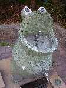
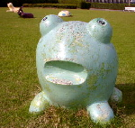
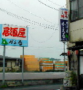
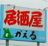
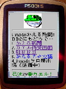

亀戸駅前にも分布！かえる水飲み場！ 【江戸亀戸発=岩尾別ぴりか様】噂のカエル水飲み場ですね。採取地域は、東京の亀戸駅近辺にある公園です。可愛さのあまり、ついシャッターを切ってしまいました。これは、先週山形に行ったときに立ち寄った、かみのやま競馬場の敷地内にあったオブジェです。カエル以外にも、馬やウサギ、カメやライオン等々色々なオブジェが多数混在する中に堂々ランクイン。 僕は自称、「公園遊具写真家」ということで、あちこちの公園で見つけた、ユニークなオブジェを撮って回るのが趣味だったりもします。亀戸のカエルは、そんな中でも会心の作かも。ホームページにも貼っています。
謎のカエルオブジェも発見！ 【山形発=岩尾別ぴりか様】山形に行ったときに立ち寄った、かみのやま競馬場の敷地内にあったオブジェです。カエル以外にも、馬やウサギ、カメやライオン等々色々なオブジェが多数混在する中に堂々ランクイン。
僕は自称、「公園遊具写真家」ということで、あちこちの公園で見つけた、ユニークなオブジェを撮って回るのが趣味だったりもします。 かえる水飲み場のＨＰを発見！【福岡発=ケイ様】全国的な分布が確認されている「かえる水飲み場」の製造元と思われる会社を発見しました。石川県の会社です。でも、色は違うんです。おおもとの会社が型を製作して、別の業者が次々に二次製品を作っているために各地で微妙に型違いが生まれた可能性もあります。 型を、会社間で貸し借りしてるかもしれません。でも石だったら、削り出しだからイッテンモノの可能性が高いです。春日公園のかえる水飲みや、親子かえるは、多分、町の石職人さんが造ってるようですね。 というわけで、各地の発見報告で、それぞれの型がびみょ〜に違うのは最初の型を模倣して、新しい型をつくってるのかも、、、？それか特許がきれて、かえる型は自由の身になったのでしょうか？
製造している会社はここ↓
製造写真はここ↓
製造写真はここ↓
【全国かえる奉賛会】おおおー。すごい！カエラーの間では全国的な謎になっている、カエル水飲み場。偶然にもまったく関係がない２人の人から重大な情報がもたらされた。公園遊具家にして詩人のぴりかさんと、公園設計者にかかわるケイさんのさらなる追跡に期待するぞーーー
 会社帰りに「居酒屋かえる」！ 【千葉発本郷順司様】千葉県市原市八幡に「居酒屋かえる」あり。 まだ入ったことはない。
【全国かえる奉賛会】会社帰りにいっぱいやるカエラーのための居酒屋が完成したぞおおお。でも、メニューに「カエル焼き」とかはやっていないよね。次回はぜひ、営業時間にいって、倒れるまで飲んでほしいぞ！よろしくねー
ＪＲ横浜線２駅にカエル像！【横浜発=kerochi-kura同志記者】ＪＲ横浜線の長津田駅と十日市場駅の近くには、無事カエル像というものがあります。長津田のものはリアル系で、十日市場のものは威風堂々とした貫禄があります。もしご存じでなかったら、一度行かれてみてください。長津田のカエル様は、ブロンズ製でいつも口から水を噴き出していて、小さな池に住んでおります。また、十日市場のカエル様は、あぐらをかいており、背中には蓮のうちわ（？）を携えています。少々ヒゲも生えております。 なお、駅からの所要時間は、長津田のカエル様は徒歩１分もかからず、十日市場のカエル様は徒歩６分ぐらいです。
【全国かえる奉賛会】行きたあああああい。福岡から連れていってくれーっ！！また関頭地区のカエラーは、大挙して長津田に行き。デジカメ画像をゲットしてくれい！
 かえるi-mode新聞を発刊へ！【全国かえる奉賛会】通勤時間や仕事の合間に、カエル情報を手にできるように、かえる新聞のi-mode版ページと、メールマガジン「かえるi-mode新聞」を発刊したぞおおおおおおおおお。！さっそく携帯電話に、以下のアドレスを登録しましょー。カエル新聞専属SE蓮カエル同志の建設による掲示板も準備中だし、ドコモiアプリ対応のゲームと時計もあるよおおおおお。 カエル展３スタッフＴシャツをネット記念販売へ！ 【福岡かえる展３実行委員会】福岡に来たいけど来れないカエラーのために、カエル展気分を味わえる、スタッフ専用Ｔシャツを特別販売してますが、残りはＳサイズばかりになりました！
【福岡かえる展３実行委員会】福岡に来たいけど来れないカエラーのために、カエル展気分を味わえる、スタッフ専用Ｔシャツを特別販売してますが、残りはＳサイズばかりになりました！カワノナミさん作のイラストを使ったポスターをそのまま大胆にプリントしました。かなりインパクトある。このところ、世界的にブームになっている日本語Ｔシャツとして、海外旅行などに着てゆくと、現地の人に受けるかも！！ 価格は会場価格よりも割安な２０００円（送料別）で、おわけします。。サイズはＳ（あと少し）のみになってしまいました。
投稿採用者に武功カエル徽章を授与！ |
かえる古新聞過去に取り上げた記事を見出し付きで一覧したい人は、ここをクリック◆創刊号を見る◆先週号を見る◆話題の号を見る◆かえる新聞の昔を読む◆COOL NET FROG RANKING !
| ||||||||||||||||||||||||||||||
|
私も入っています。。全国かえる奉賛会
大王様に会うには、このバナーをクリック。ずっと奥に写真館があるぞ。全国かえる奉賛会に入会するには、自分のホームページのどこかに、下の部分を追加するとバナーがリンク付きで表示されるぞ。どんどん入会しましょー |


|